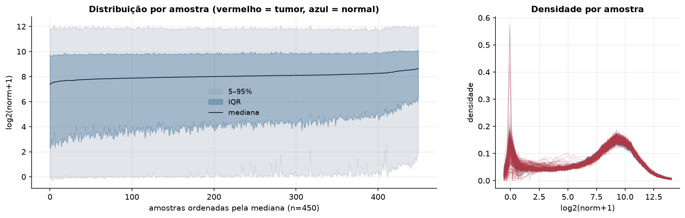
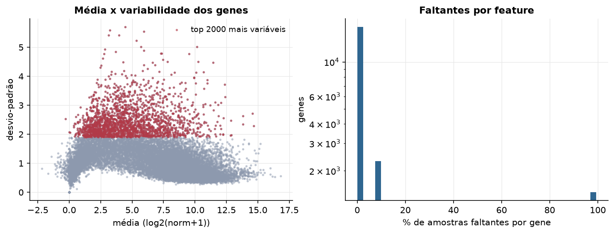
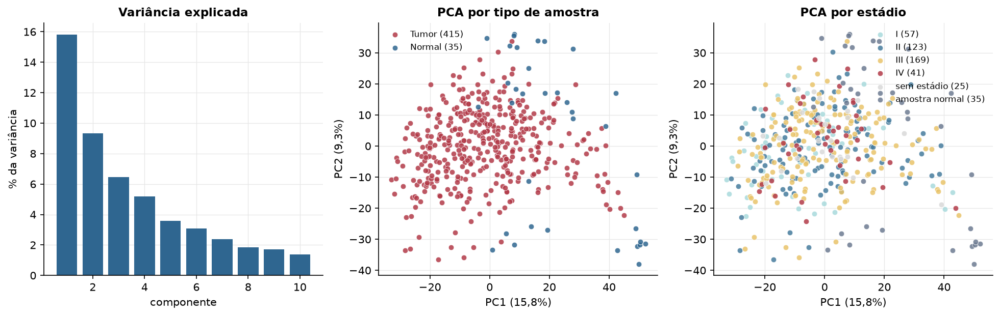
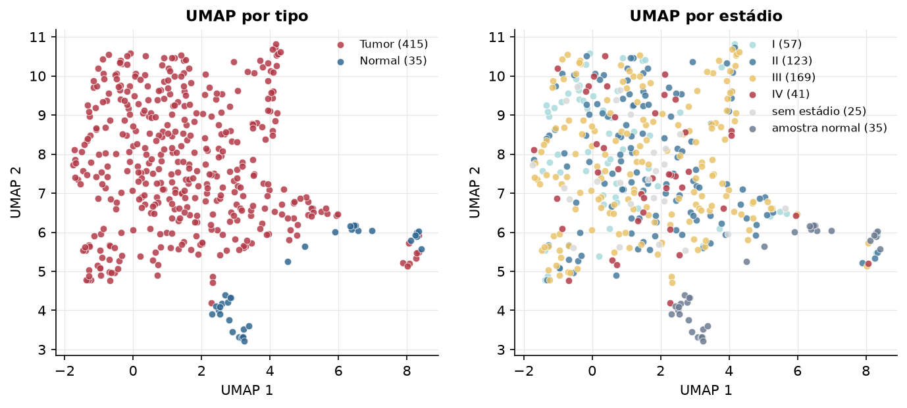
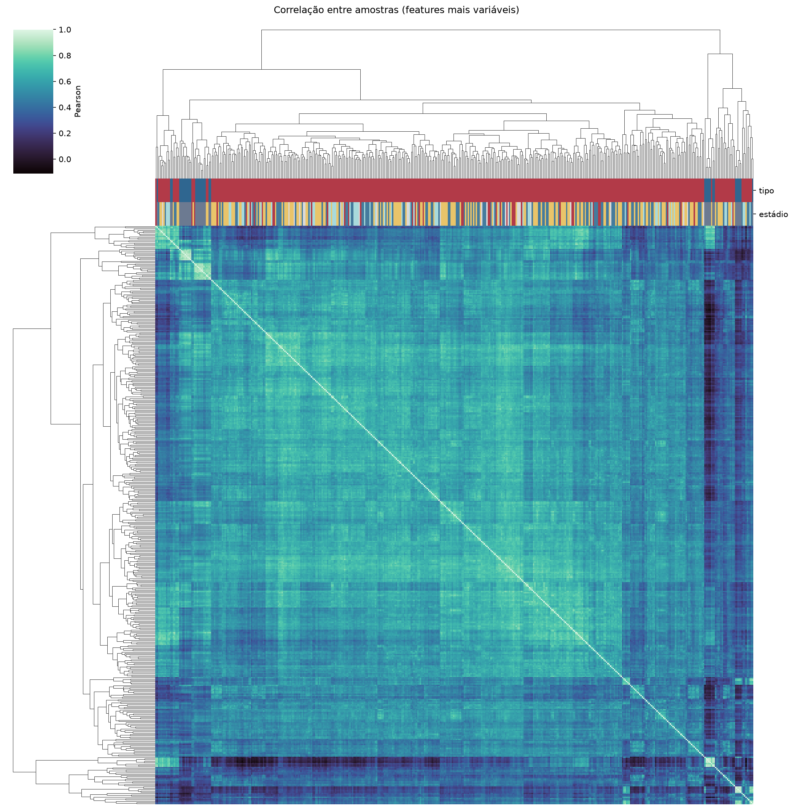
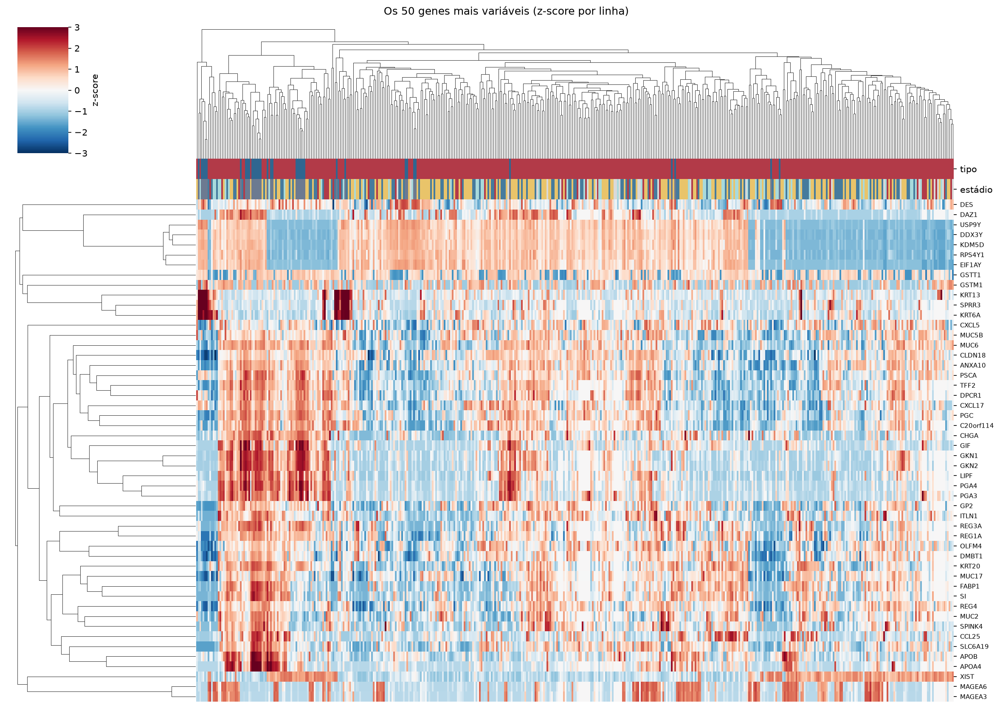
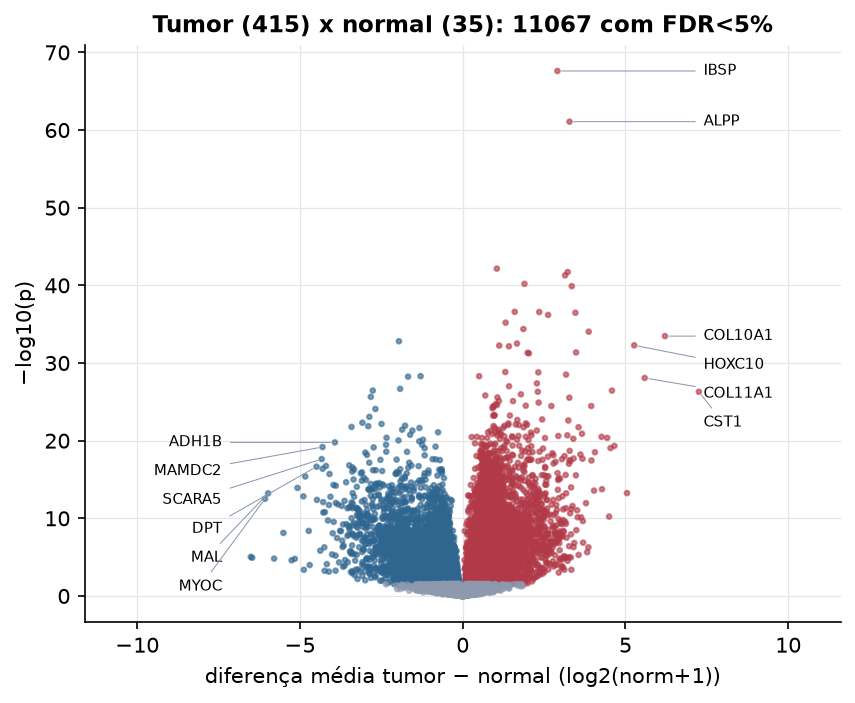
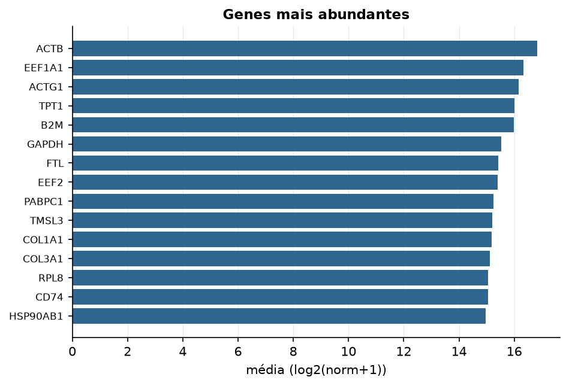

STAD · RNA-seq (PanCanAtlas)
Illumina HiSeq, RSEM normalizado e corrigido por lote (EB++), log2(x+1) · gerado em 22/10/2026 04:24
20.531genes
415amostras tumorais
35amostras normais
8,0%valores faltantes
Fonte: PanCanAtlas EB++ via API do Xena
Estes valores já vêm normalizados e com correção de lote entre plataformas e centros. Servem bem para modelos gaussianos ou redes neurais; para um modelo de contagem use as contagens brutas do GDC.
Principais resultados
- 20.531 genes medidos em 450 amostras (415 tumorais e 35 normais); 8,0% dos valores estão faltando.
- Os dois primeiros componentes principais explicam 15,8% e 9,3% da variância das features mais variáveis.
- Correlação mediana entre amostras: 0,55.
- Amostras com correlação muito abaixo das demais (possíveis outliers técnicos): TCGA-FP-7829-11, TCGA-HU-A4G3-11, TCGA-HU-A4GC-11, TCGA-HU-A4GP-11, TCGA-HU-A4GY-11, TCGA-IN-7806-11, TCGA-IN-8663-11.
- Tumor x normal: 11067 genes diferentes com FDR < 5% (6460 maiores no tumor, 4607 maiores no normal; 32 pacientes têm o par tumor-normal).
- Mais aumentados no tumor: IBSP, ALPP, MC2R, CST4, PIWIL1, C3P1, MAGEA3, KRTAP4-1.
- Mais reduzidos no tumor: L3MBTL4, H2AFY2, NDRG2, METTL7A, GNG7, ADRB2, GREM2, DARC.
- Associações clínicas com p < 0,05 nos componentes principais: PC1 com estádio (p=0.00029); PC1 com idade (p=0.00051); PC1 com sobrevida (p=0.00092).
- Em mediana, 81,8% dos genes têm expressão acima de log2(norm+1)=1 em cada amostra.
Distribuição dos valores


Estrutura das amostras




Tumor x normal

Features mais diferentes entre tumor e normal
| diferenca_tumor_menos_normal | t | p | fdr | |
|---|---|---|---|---|
| IBSP | 2.908 | 22.733 | 2.48e-68 | 4.73e-64 |
| ALPP | 3.28 | 20.525 | 8.28e-62 | 7.9e-58 |
| MC2R | 1.047 | 15.859 | 6.97e-43 | 4.43e-39 |
| CST4 | 3.225 | 20.381 | 1.92e-42 | 9.15e-39 |
| PIWIL1 | 3.143 | 16.248 | 5.16e-42 | 1.97e-38 |
| C3P1 | 1.897 | 15.016 | 6.41e-41 | 2.04e-37 |
| MAGEA3 | 3.35 | 14.949 | 1.27e-40 | 3.45e-37 |
| KRTAP4-1 | 1.597 | 14.278 | 2.56e-37 | 5.73e-34 |
| FGF19 | 2.35 | 14.913 | 2.7e-37 | 5.73e-34 |
| MAGEA6 | 3.462 | 14.312 | 3.35e-37 | 6.4e-34 |
| MAGEA12 | 2.623 | 14.09 | 6.43e-37 | 1.11e-33 |
| HSPD1 | 1.317 | 21.742 | 6.28e-36 | 9.99e-33 |
| CSAG2 | 1.864 | 13.742 | 4.19e-35 | 6.14e-32 |
| HOTAIR | 3.87 | 20.55 | 9.15e-35 | 1.25e-31 |
| COL10A1 | 6.213 | 24.906 | 3.43e-34 | 4.36e-31 |
| L3MBTL4 | -1.96 | -15.925 | 1.56e-33 | 1.86e-30 |
| SPERT | 1.666 | 14.285 | 3.09e-33 | 3.47e-30 |
| HOXC10 | 5.268 | 19.093 | 5.24e-33 | 5.55e-30 |
| SLCO1B1 | 1.122 | 13.094 | 5.65e-33 | 5.68e-30 |
| AAA1 | 1.419 | 14.114 | 6.99e-33 | 6.66e-30 |
| BAAT | 3.482 | 17.147 | 4.34e-32 | 3.94e-29 |
| SP8 | 1.994 | 13.927 | 4.8e-32 | 4.16e-29 |
| SPDYC | 2.033 | 14.802 | 5.64e-32 | 4.68e-29 |
| MCM8 | 1.309 | 19 | 1.43e-29 | 1.14e-26 |
| ACTL8 | 2.322 | 13.221 | 1.61e-29 | 1.23e-26 |
| DMBX1 | 3.175 | 17.118 | 3.09e-29 | 2.26e-26 |
| H2AFY2 | -1.295 | -13.218 | 4.91e-29 | 3.36e-26 |
| NONO | 0.503 | 16.667 | 4.94e-29 | 3.36e-26 |
| NDRG2 | -1.68 | -18.216 | 5.67e-29 | 3.73e-26 |
| COL11A1 | 5.59 | 19.525 | 8.38e-29 | 5.33e-26 |
Associação com variáveis clínicas
p-valores da associação dos três primeiros componentes principais (só tumores) com estádio (Kruskal-Wallis), sexo (Mann-Whitney), idade (Spearman) e sobrevida global (Cox univariado).
| estádio (Kruskal) | sexo (Mann-Whitney) | idade (Spearman) | sobrevida OS (Cox) | |
|---|---|---|---|---|
| PC1 (14,9%) | 0.000292 | 0.972 | 0.000506 | 0.000922 |
| PC2 (8,5%) | 0.472 | 0.184 | 0.383 | 0.292 |
| PC3 (6,0%) | 0.63 | 0.694 | 0.642 | 0.356 |
Mais abundantes
